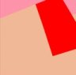

planet yuinoid
eniehackさんのplanet eniehackを参考にしたページです。私個人のSNS投稿とこのサイトの更新を1つのページにまとめて見ることができます。
データソース:
 100%health (このサイト) のRSSフィード (rss.xml)
100%health (このサイト) のRSSフィード (rss.xml)- tanoshii.siteの投稿 (@health@tanoshii.site)
- misskey.ioの投稿 (@yuinoid@misskey.io )
- mistodon.cloudの投稿 (@healthcare@mistodon.cloud)
misskeyとmastodonはAPIを使用して投稿を取得します。あんまり更新しないでください。
データを読み込み中...
最終更新: --